Inhalt Index DeskTop Bronstein

 Funktionalanalysis Stetige lineare Operatoren und Funktionale Trennung konvexer Mengen
Funktionalanalysis Stetige lineare Operatoren und Funktionale Trennung konvexer Mengen


Eine von  verschiedene lineare Teilmenge L des (reellen) Vektorraumes
verschiedene lineare Teilmenge L des (reellen) Vektorraumes  heißt Hyperteilraum oder Hyperebene durch
heißt Hyperteilraum oder Hyperebene durch  , wenn ein 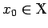 existiert, mit dem 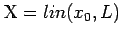 gilt. Mengen der Gestalt x+L sind affin-lineare Mannigfaltigkeiten (s. Lineare und affin lineare Teilmengen). Ist dabei L ein Hyperteilraum, so nennt man sie Hyperebenen.
, wenn ein 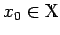 existiert, mit dem 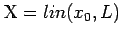 gilt. Mengen der Gestalt x+L sind affin-lineare Mannigfaltigkeiten (s. Lineare und affin lineare Teilmengen). Ist dabei L ein Hyperteilraum, so nennt man sie Hyperebenen.
Es besteht der folgende enge Zusammenhang zwischen Hyperebenen und linearen Funktionalen: Einerseits ist der Kern 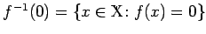 eines linearen Funktionals f auf  ein Hyperteilraum in
ein Hyperteilraum in  , und für jede Zahl
, und für jede Zahl  existiert ein 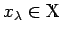 mit 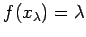 und 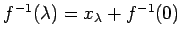. Andererseits existiert zu einem Hyperteilraum 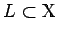, einem 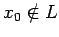 und 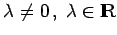 stets ein eindeutig bestimmtes lineares Funktional f auf
existiert ein 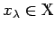 mit 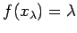 und 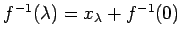. Andererseits existiert zu einem Hyperteilraum 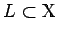, einem 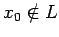 und 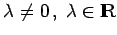 stets ein eindeutig bestimmtes lineares Funktional f auf  mit f-1(0)=L und 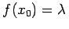. Die Abgeschlossenheit von f-1(0) im Falle eines normierten Raums
mit f-1(0)=L und 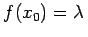. Die Abgeschlossenheit von f-1(0) im Falle eines normierten Raums  ist äquivalent zur Stetigkeit des Funktionals
ist äquivalent zur Stetigkeit des Funktionals  .
.